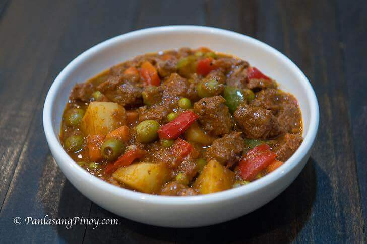

Beef Kaldereta is a main stay in any Filipino Kitchen. It is a type of beef stew cooked with tomato sauce and liver spread. Ingredients such as potato, carrots, bell peppers, and olives are also utilized when cooking this dish.